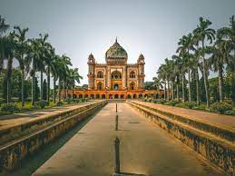

Bangladesh, to the east of India on the Bay of Bengal, is a South Asian country marked by lush greenery and many waterways. Its Padma (Ganges), Meghna and Jamuna rivers create fertile plains, and travel by boat is common. On the southern coast, the Sundarbans, an enormous mangrove forest shared with Eastern India, is home to the royal Bengal tiger.
india, officihe00 BCE, an ad into India from the northwest,[32][33] unfolding as the language of the Rigveda, and recording the dawning of Hinduism in India.[34] The Dravidian languages of India were supplanted in the northern and western regions.[35] By 400 BCE, stratification and exclusion by caste had emerged within Hinduism,[36] and Buddhism and Jainism had arisen, proclaiming social orders unlinked to heredity.[37] Early political consolidations gave rise to the loose-knit Maurya and Gupta Empires based in the Ganges Basin.[38] Their collective era was suffused with wide-ranging creativity,[39] but also marked by the declining status of women,[40] and the incorporation of untouchability into an organised .[57]
Pakistan,[c] officially the Islamic Republic of Pakistan,[d] is a country in South Asia. It is the world's fifth-most populous country, with a population of almost 242 million, and has the world's second-largest Muslim population.[13] Pakistan is the 33rd-largest country by area, spanning 881,913 square kilometres (340,509 square miles). It has a 1,046-kilometre (650-mile) coastline along the Arabian Sea and Gulf of Oman in the south, and is bordered by India to the east, Afghanistan to the west, Iran to the southwest, and China to the northeast. It is separated narrowly from Tajikistan by Afghanistan's Wakhan Corridor in the north, and also shares a maritime border with Oman. Pakistan is the site of several ancient cultures, including the 8,500-year-old Neolithic site of Mehrgarh in Balochistan,[14] and the Indus Valley Civilisation of the Bronze Age, the most extensive of the civilisations of the Afro-Eurasia.[15][16] The region that comprises the modern state of Pakistan was the realm of multiple empires and dynasties, including the Achaemenid; briefly that of Alexander the Great; the Seleucid, the Maurya, the Kushan, the Gupta;[17] the Umayyad Caliphate in its southern regions, the Hindu Shahis, the Ghaznavids, the Delhi Sultanate, the Mughals,[18] the Durranis, the Sikh Empire, British East India Company rule, and most recently, the British Indian Empire from 1858 to 1947.
facebook instagram